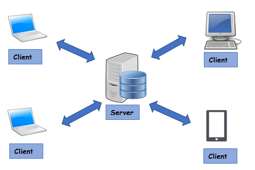
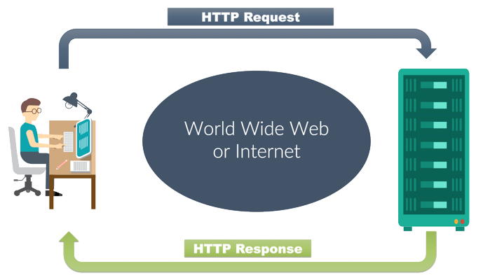
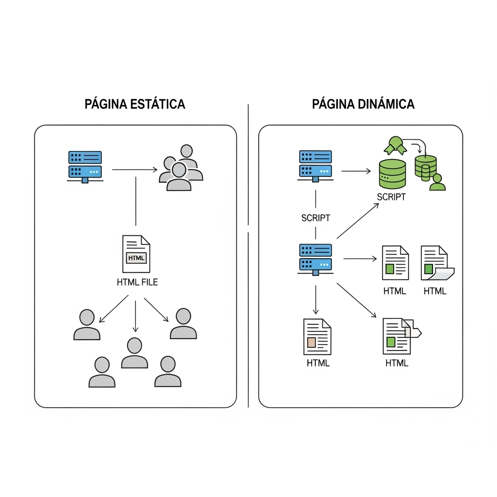
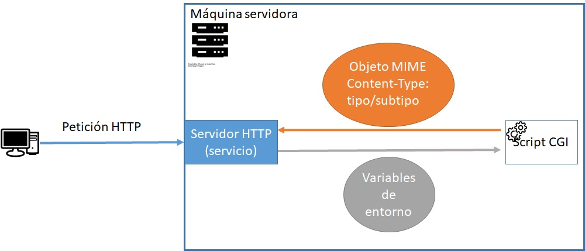
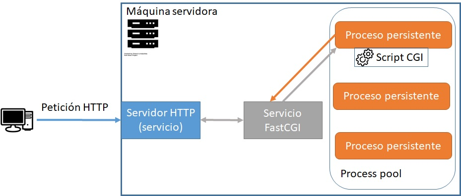
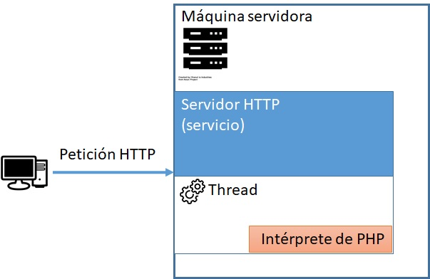
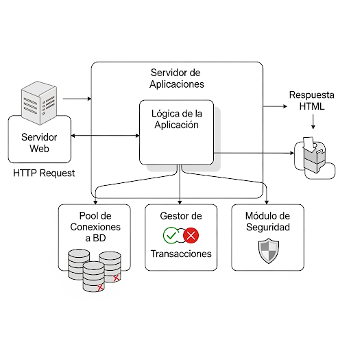
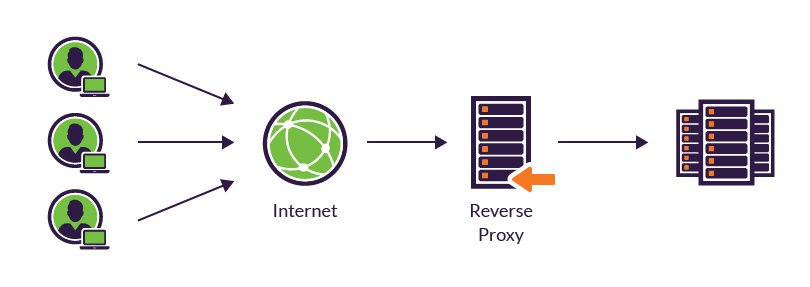

Conceptos básicos
¡Bienvenido/a al fascinante mundo del desarrollo web en entorno servidor! Si alguna vez te has preguntado qué ocurre "detrás de las cámaras" cuando te registras en una red social, compras un producto en una tienda online o simplemente ves contenido personalizado en una página, estás en el lugar correcto.
Hasta ahora, es probable que tu experiencia con el desarrollo web se haya centrado en el cliente (frontend): el HTML que estructura el contenido, el CSS que lo embellece y el JavaScript que añade interactividad visual. Esa es la parte del iceberg que vemos.
En este módulo, nos sumergiremos en el servidor (backend), la parte oculta del iceberg que hace que casi todo en la web moderna sea posible. El backend es el cerebro, la sala de máquinas de cualquier aplicación web compleja. Es donde reside la lógica de negocio, se gestiona la seguridad y se manipulan los datos.
A lo largo de estos apuntes, aprenderás a: * Construir páginas dinámicas cuyo contenido cambia según el usuario o la información de una base de datos. * Procesar la información que los usuarios envían a través de formularios. * Crear sistemas de autenticación seguros para gestionar usuarios y sesiones. * Conectar tus aplicaciones a bases de datos para almacenar y recuperar información de forma eficiente. * Desarrollar servicios web y APIs para que tus aplicaciones se comuniquen con otras.
Pasaremos de crear páginas estáticas a construir aplicaciones web completas y robustas. ¡Empecemos por sentar las bases!
Fundamentos de la Programación Web: Cliente y Servidor
Para entender cómo funciona la web moderna, lo primero es diferenciar los dos escenarios principales donde se ejecuta el código: el cliente y el servidor. Toda página web que visitas, desde un simple blog hasta una compleja tienda online, es el resultado de la colaboración entre ambos.
El cliente es el navegador web del usuario (Google Chrome, Firefox, Safari, etc.). Es el programa que solicita, recibe e interpreta la información para mostrar la página web.
El código que se ejecuta en el cliente es el responsable de todo lo que el usuario ve e interactúa directamente en su pantalla. Esta capa de la aplicación, conocida como frontend, se construye sobre tres tecnologías fundamentales que trabajan en perfecta sintonía. El navegador web no es un simple visor de documentos; es un entorno de ejecución sofisticado que interpreta y da vida a los ficheros que recibe desde el servidor.
La base de todo es el HTML (HyperText Markup Language), el lenguaje que define la estructura y el contenido semántico de la página. Podemos imaginarlo como el esqueleto de la aplicación: establece dónde va un encabezado, un párrafo, una imagen o un botón. Sin HTML, la página sería un lienzo en blanco, sin información ni organización. Es el primer plano que el navegador lee para entender qué elementos debe renderizar.
Sobre esta estructura ósea, el CSS (Cascading Style Sheets) actúa como la piel y la ropa, encargándose exclusivamente de la presentación y el estilo. Es el lenguaje que dicta la apariencia visual de los elementos definidos por el HTML. Los colores, las tipografías, los márgenes y el posicionamiento de cada caja o texto son responsabilidad del CSS. Transforma el esqueleto funcional en una experiencia visualmente coherente y atractiva, definiendo la identidad gráfica de la aplicación.
Finalmente, JavaScript aporta los músculos y el sistema nervioso; es el lenguaje que introduce la interactividad y el dinamismo. Mientras que HTML y CSS crean una presentación estática, JavaScript la convierte en una aplicación reactiva. Se encarga de validar un formulario en tiempo real, mostrar una ventana emergente, crear animaciones suaves o actualizar una sección de la página sin necesidad de recargarla por completo. Es la tecnología que permite que la web se sienta como una aplicación fluida y no como un documento pasivo.
El modelo de ejecución de estas tres tecnologías es directo y local. El servidor web actúa como un simple almacén que, ante la petición de un usuario, le entrega los ficheros de código (HTML, CSS y JavaScript). Es el navegador del usuario, en su propio ordenador, el que asume la carga de trabajo: lee el HTML para construir el DOM (Document Object Model), aplica los estilos del CSS y ejecuta las sentencias de JavaScript para manipular la página. Todo este proceso ocurre directamente en la máquina del cliente, lo que permite una respuesta instantánea a las acciones del usuario.

En contraposición al cliente, encontramos el servidor, que podemos visualizar como el cerebro central y la sala de máquinas de la aplicación web. Se trata de un ordenador remoto, optimizado para estar siempre encendido y conectado a internet, cuya misión principal es almacenar los recursos de la aplicación y procesar la lógica de negocio. Es en este entorno, conocido como backend, donde se ejecutan lenguajes de programación robustos como PHP, Python, Java o Node.js. Una de las reglas de oro de la seguridad y la arquitectura web es que el código fuente escrito en estos lenguajes reside y se ejecuta exclusivamente en el servidor; el navegador del usuario nunca tiene acceso a él.
El modelo de ejecución en el servidor es un proceso reactivo que se inicia siempre a raíz de una petición del cliente. Cuando un usuario hace clic en un enlace o envía un formulario, su navegador envía una solicitud a la URL correspondiente. El servidor, que está constantemente a la escucha, recibe esta petición y actúa como un director de orquesta: identifica el script o programa responsable de gestionar esa solicitud y lo pone en marcha. A partir de este momento, comienza la verdadera magia del backend.
La ejecución del código del lado del servidor es donde se realizan las tareas complejas que definen a una aplicación web dinámica. Este código es el único que tiene la capacidad de conectarse de forma segura a una base de datos para consultar el catálogo de productos, verificar las credenciales de un usuario o guardar un nuevo comentario en un blog. Es el responsable de procesar los datos enviados desde un formulario de contacto, de personalizar el contenido de la página para que un usuario vea su nombre de perfil, o de comunicarse con servicios externos (APIs) para, por ejemplo, obtener la previsión del tiempo. Son operaciones que, por su naturaleza sensible o por la necesidad de acceder a recursos centralizados, no pueden ni deben ejecutarse en la máquina del cliente.
Una vez que el servidor ha finalizado todas estas operaciones, su trabajo culmina en la generación de una respuesta. Es fundamental entender que el servidor no envía su código PHP o Python al cliente. En su lugar, envía el resultado de haberlo ejecutado. Este resultado es, comúnmente, un documento de texto plano, como una página HTML completamente ensamblada y lista para ser renderizada, o datos estructurados en formato JSON si se trata de una API. Este documento final viaja de vuelta por la red hasta el navegador del cliente, que solo tiene que preocuparse de interpretarlo y mostrarlo. El usuario final solo interactúa con este producto terminado, desconociendo por completo la compleja secuencia de operaciones que ocurrieron en milisegundos en un servidor a cientos o miles de kilómetros de distancia.
La siguiente tabla resumen muestra las difernecias clave entre el cliente y el servidor:
| Característica | Cliente (Client-Side) | Servidor (Server-Side) |
|---|---|---|
| Lugar de ejecución | Navegador web del usuario | Ordenador remoto (servidor) |
| Tecnologías | HTML, CSS, JavaScript | PHP, Python, Java, Node.js, Ruby, etc. |
| Tareas típicas | Interfaz de usuario, interactividad, validaciones | Lógica de negocio, acceso a BBDD, autenticación de usuarios |
| Visibilidad del código | El usuario puede ver el código (HTML, CSS, JS) | El código fuente nunca es visible para el usuario |
| Acceso a recursos | Limitado a los recursos del navegador y del usuario | Acceso total a los recursos del servidor (BBDD, archivos) |
El Lenguaje de la Web: Protocolo HTTP
Si el modelo cliente-servidor es la arquitectura de la web, el Protocolo de Transferencia de Hipertexto (HTTP) es el idioma universal y el sistema de mensajería que permite que ambos componentes se comuniquen. Es un conjunto de reglas bien definidas y rigurosas que asegura que un navegador en Japón pueda entenderse perfectamente con un servidor en Argentina. Toda interacción, desde cargar una imagen hasta enviar un formulario, se rige por este protocolo.
La comunicación en la web opera bajo un paradigma fundamentalmente simple y elegante: el modelo Petición-Respuesta (Request-Response). El flujo es siempre el mismo y es siempre iniciado por el cliente. Podemos imaginarlo como un diálogo: el cliente "habla" primero enviando un mensaje de petición a un servidor, solicitando un recurso o una acción. El servidor, que se encuentra en un estado de escucha pasiva, procesa esa petición y "responde" con un mensaje de respuesta, que contiene el resultado de la solicitud. Este ciclo de dos pasos es la base de toda la navegación web.
La Anatomía de una Petición HTTP
Un mensaje de petición del cliente no es una simple pregunta, sino un paquete de información estructurado con varias partes clave. La primera es el Método, que actúa como el verbo de la petición, indicando la intención del cliente. Los más comunes son GET, utilizado para solicitar y recuperar recursos (como cuando visitas una página), y POST, empleado para enviar datos al servidor con el fin de crear un nuevo recurso (como al registrar un nuevo usuario).
Junto al método, la petición incluye la URL (Uniform Resource Locator), que es la dirección exacta del recurso que se desea obtener. A continuación, se encuentran las Cabeceras (Headers), un conjunto de metadatos que proporcionan contexto crucial, como el tipo de navegador que realiza la petición, los formatos de datos que acepta o la información de autenticación. Finalmente, para métodos como POST, la petición contiene un Cuerpo (Body), que es el paquete de datos en sí mismo, como la información de los campos que el usuario ha rellenado en un formulario.

La Anatomía de una Respuesta HTTP
La respuesta del servidor sigue una estructura similar. Su componente más importante para un desarrollador es el Código de Estado, un número de tres dígitos que resume el resultado de la petición. Un 200 OK indica que todo ha ido correctamente. Un 404 Not Found nos dice que el recurso solicitado no existe en el servidor. Un temido 500 Internal Server Error señala que algo ha fallado en la ejecución del código del lado del servidor.
Al igual que la petición, la respuesta también incluye Cabeceras que describen el contenido que se está enviando (por ejemplo, Content-Type: text/html para una página web) o directivas sobre cómo el navegador debe manejarlo (como las instrucciones de caché). Por último, si la petición tuvo éxito, la respuesta contendrá un Cuerpo, que es el recurso solicitado: el documento HTML, los datos de una imagen, un fichero CSS o una cadena de texto en formato JSON.
La "Amnesia" del Servidor: El Concepto de "Stateless"
Un concepto crucial del diseño de HTTP es que es un protocolo "sin estado" (stateless). Esto significa que cada ciclo de petición-respuesta es un evento completamente independiente y aislado. El servidor no guarda ningún recuerdo de las transacciones anteriores con un mismo cliente. Si pides la página principal y un segundo después pides la página de contacto, el servidor te trata como a un completo desconocido en ambas ocasiones. No tiene memoria inherente.
Esta "amnesia" es una característica de diseño que simplifica enormemente el funcionamiento de los servidores, pero presenta un desafío para las aplicaciones modernas que necesitan continuidad, como un carrito de la compra o una sesión de usuario. Precisamente para superar esta limitación, se desarrollaron técnicas como las sesiones y las cookies, que actúan como una "memoria externa" para que la aplicación pueda recordar a un usuario entre diferentes peticiones.
Generación dinámica
En el apartado anterior, sentamos las bases de la arquitectura cliente-servidor. Comprendimos que el cliente se encarga de la presentación y el servidor de la lógica pesada. Ahora, exploraremos el concepto que une ambos mundos y que constituye el corazón de la programación de backend: la generación dinámica de páginas web.
Una página web estática es como un folleto impreso. Su contenido está fijo en el fichero HTML; es el mismo para cada persona que lo ve y solo cambia si un desarrollador edita manualmente el código fuente. Esto es útil para páginas informativas simples, pero se queda corto para la web interactiva que conocemos hoy. ¿Cómo podría una red social mostrarte tus notificaciones? ¿Cómo sabría una tienda online qué productos poner en tu carrito?

Aquí es donde entra en juego la generación dinámica. En lugar de enviar un archivo HTML pre-escrito, el servidor actúa como una fábrica que construye la página en tiempo real, justo en el momento en que el usuario la solicita. Utilizando un lenguaje de backend, el servidor puede ejecutar lógica, consultar bases de datos, comprobar la hora, leer la información del usuario y, en base a todos esos factores, ensamblar un documento HTML único y personalizado para esa petición específica.
Gracias a este proceso, podemos crear aplicaciones que:
- Muestran un saludo personalizado con el nombre del usuario.
- Presentan la fecha y hora actual.
- Extraen las últimas noticias de una base de datos y las muestran en la portada.
- Calculan y muestran los resultados de una búsqueda.
En esencia, la generación dinámica es el proceso de usar código de servidor para "escribir" el HTML que se enviará al cliente. Existen muchas técnicas y arquitecturas para lograrlo, pero nuestro viaje comenzará con el método más fundamental e histórico: el código embebido.
Mecanismos de ejecución de código en servidores
Un mecanismo de ejecución de código en un servidor web es la estrategia o tecnología que utiliza el servidor (como Apache o Nginx) para procesar un fichero que contiene código de programación (como un script .php o .py) en lugar de simplemente servirlo como un fichero de texto estático.
El servidor web, por sí mismo, solo sabe entregar archivos. Cuando recibe una petición para un fichero ejecutable, necesita un "puente" para pasarle ese fichero a un intérprete o motor que sí sepa cómo ejecutar el código. El resultado de esa ejecución (normalmente HTML) es lo que se envía de vuelta al cliente.
Mecanismos Principales de Ejecución
Existen varias formas de establecer este "puente", cada una con sus propias ventajas en cuanto a rendimiento, escalabilidad y aislamiento.
1. CGI (Common Gateway Interface)
Es el estándar original y más simple. Por cada petición que llega, el servidor web inicia un proceso del sistema operativo completamente nuevo, ejecuta el script dentro de él, captura la salida que genera el script (stdout), y finalmente destruye el proceso.

- Ventaja: Universal y simple de entender. Funciona con casi cualquier lenguaje.
- Desventaja: Extremadamente lento e ineficiente. El coste de crear y destruir un proceso para cada visita es muy alto, lo que lo hace inviable para sitios con tráfico. Hoy en día se considera obsoleto.
2. FastCGI
Es la evolución de CGI y soluciona su principal problema de rendimiento. En este modelo, un gestor de procesos independiente (como PHP-FPM) mantiene un conjunto de procesos ("pool") siempre activos y listos para trabajar. El servidor web simplemente reenvía las peticiones a uno de estos procesos ya existentes a través de un socket.

- Ventaja: Alto rendimiento al eliminar la creación constante de procesos. Buen aislamiento, ya que la aplicación se ejecuta de forma separada al servidor web.
- Desventaja: Configuración ligeramente más compleja que los módulos embebidos.
- Uso: Es el estándar de facto en arquitecturas modernas, especialmente con Nginx.
3. Módulo Embebido
En esta arquitectura, el intérprete del lenguaje se carga directamente dentro del proceso del servidor web como un módulo. El ejemplo más clásico es mod_php para Apache. Cuando llega una petición, el propio proceso de Apache, que ya "habla" PHP, ejecuta el código directamente.

- Ventaja: Velocidad máxima, ya que no hay comunicación entre procesos externos.
- Desventaja: Menor aislamiento (un error en el script puede afectar la estabilidad del proceso del servidor) y mayor consumo de memoria por parte del servidor web.
Tabla Comparativa
| Mecanismo | Cómo Funciona | Ventaja Principal | Desventaja Principal |
|---|---|---|---|
| CGI | Crea un proceso nuevo por cada petición. | Universal | Muy lento y obsoleto. |
| FastCGI | Reutiliza un pool de procesos persistentes. | Alto rendimiento y buen aislamiento. | Configuración intermedia. |
| Módulo Embebido | El intérprete se carga dentro del servidor web. | Máxima velocidad (sin IPC). | Menor aislamiento, más memoria. |
Servidor de Aplicaciones
Para las aplicaciones a gran escala y de nivel empresarial, a menudo se necesita más que una simple ejecución de código. Se requiere un entorno robusto que gestione recursos, seguridad y transacciones de manera centralizada. Este entorno es el servidor de aplicaciones.
Un entorno compuesto por un servidor web y un intérprete de lenguaje, comunicándose a través de mecanismos eficientes como FastCGI o módulos embebidos, es ciertamente muy eficaz para su propósito fundamental: ejecutar un script y generar una respuesta. Sin embargo, el desarrollo de aplicaciones robustas, escalables y seguras implica resolver desafíos que trascienden este simple ciclo de petición-respuesta. A medida que las aplicaciones crecen en complejidad, emergen una serie de necesidades críticas a nivel de infraestructura que un simple intérprete de scripts no está diseñado para resolver. Es en este punto donde debemos preguntarnos por las capacidades que rodean a la ejecución del código.

La primera de estas grandes cuestiones es la gestión eficiente de los recursos, particularmente las conexiones a la base de datos. Establecer una conexión con un sistema gestor de bases de datos es una operación costosa en términos de tiempo y recursos computacionales. En un modelo simple, cada script que necesita datos podría abrir su propia conexión, realizar la consulta y luego cerrarla. Si bien esto funciona para un tráfico bajo, resulta desastroso a escala. Con cientos o miles de peticiones concurrentes, este ciclo constante de abrir y cerrar conexiones puede agotar los recursos del servidor de base de datos, provocando cuellos de botella y una degradación severa del rendimiento de toda la aplicación.
Otro desafío fundamental es garantizar la integridad de los datos a través de operaciones complejas. Pensemos en una transacción de comercio electrónico: el proceso implica verificar el stock de un producto, reducirlo, autorizar el pago del cliente y finalmente registrar el pedido. Estos pasos deben ocurrir como una unidad atómica, indivisible; o se completan todos con éxito, o no se completa ninguno. Si el sistema reduce el stock pero el pago falla, los datos quedan en un estado inconsistente y corrupto. Asegurar este comportamiento de "todo o nada", conocido como transaccionalidad, es una tarea compleja que escapa a la responsabilidad de un simple script. Se necesita una capa de gestión que pueda supervisar la operación completa y revertir los cambios si algo sale mal.
Finalmente, consideremos la gestión de la seguridad. En una arquitectura simple, es común que la lógica de autorización se mezcle directamente con la lógica de negocio, resultando en incontables comprobaciones de permisos diseminadas por todo el código fuente. Este enfoque no solo es repetitivo y propenso a errores, sino que también es increíblemente difícil de mantener y auditar. La necesidad real es un modelo de seguridad declarativo, donde las reglas de acceso se definan en una ubicación centralizada y sean aplicadas de forma automática por el propio entorno de ejecución, liberando al programador de la responsabilidad de implementar la seguridad en cada punto de la aplicación.
Es precisamente para dar una solución integral a estos problemas de gestión de recursos, transaccionalidad y seguridad centralizada que nace el concepto de servidor de aplicaciones. Este software no es un mero ejecutor de código, sino un entorno de ejecución gestionado y robusto que provee un conjunto de servicios de infraestructura de alto nivel, permitiendo a los desarrolladores centrarse en la lógica de negocio en lugar de tener que reinventar estas complejas soluciones para cada nuevo proyecto.
El Proxy Inverso
La forma estándar de integrar un servidor de aplicaciones en un entorno de producción es a través del patrón de proxy inverso. Esta arquitectura desacoplada es un pilar del software moderno. El servidor web (p. ej., Nginx) se posiciona en el borde de la red (edge server), siendo la única pieza que recibe tráfico directamente de los usuarios. Sus responsabilidades se especializan en gestionar y terminar las conexiones seguras (HTTPS), servir todo el contenido estático (imágenes, CSS, JavaScript) de forma extremadamente rápida, y actuar como balanceador de carga, distribuyendo las peticiones dinámicas entre varias instancias del servidor de aplicaciones para mejorar la escalabilidad.

Detrás de esta primera línea, en una red interna y protegida, se encuentra el servidor de aplicaciones (p. ej., Apache Tomcat, Gunicorn). Su única responsabilidad es recibir las peticiones de negocio que le reenvía el servidor web, ejecutar la lógica de la aplicación y devolver el resultado. Esta separación total de responsabilidades permite que cada componente se especialice en lo que mejor sabe hacer, mejorando el rendimiento, la seguridad y la escalabilidad del sistema en su conjunto.
Servlets y Contenedores
Para materializar el concepto abstracto de "servidor de aplicaciones", podemos examinar su implementación más extendida en el ecosistema de Java: el Contenedor de Servlets. Si en la arquitectura de proxy inverso el servidor de aplicaciones es el motor del backend, los Servlets son los componentes específicos que ejecutan la lógica.
A diferencia de un fichero .php, un Servlet es una clase de Java diseñada específicamente para procesar peticiones y respuestas HTTP. Aquí es donde el papel del servidor de aplicaciones, como Tomcat, se vuelve fundamental y se gana el título de "Contenedor", ya que es responsable de gestionar todo el ciclo de vida de estos componentes.
En contraste con el modelo de un script por petición, el contenedor carga la clase del Servlet y crea una única instancia (singleton) la primera vez que se solicita. Para cada petición subsiguiente, el contenedor no crea nada nuevo; en su lugar, asigna un hilo de ejecución (thread) que invoca un método (p. ej., doGet() o doPost()) en esa única instancia compartida. Este modelo multi-hilo es la razón de su alta eficiencia en el uso de memoria. El contenedor se encarga de todo el ciclo: llama al método init() en la creación, al método service() para cada petición, y finalmente al método destroy() cuando la aplicación se detiene. Este modelo de gestión del ciclo de vida de componentes es una de las diferencias arquitectónicas clave y uno de los servicios de valor añadido que distinguen a un servidor de aplicaciones de un simple intérprete de scripts.